Após coletar materiais de construção e plantas está na hora de construir a sua base.Mas antes de construir a base é necessário uma boa localização.
O deserto comum embora descrito como hostil possui cactos(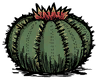) espalhados pelo bioma inteiro e ervas daninhas( ) spawnam aleatoriamente todos os dias, vale lembrar que ao colher um cacto o jogador receberá dano mas é possível amenizar esse dano utilizando armaduras(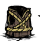). Cactos() não são afetados pelo frio e calor intenso das estações e quando cozidos sobre uma fogueira(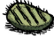) passam a dar sanidade(
) spawnam aleatoriamente todos os dias, vale lembrar que ao colher um cacto o jogador receberá dano mas é possível amenizar esse dano utilizando armaduras(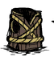). Cactos() não são afetados pelo frio e calor intenso das estações e quando cozidos sobre uma fogueira(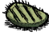) passam a dar sanidade( ). Erva daninhas() vagueiam pelo bioma e quando aproximadas podem ser interagidas para receber itens aleatórios, geralmente grama(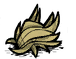) e gravetos() mas não é muito difícil se encontrar com engrenagens(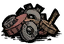) ou brinquedos para o Porco-rei (
). Erva daninhas() vagueiam pelo bioma e quando aproximadas podem ser interagidas para receber itens aleatórios, geralmente grama(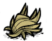) e gravetos() mas não é muito difícil se encontrar com engrenagens(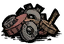) ou brinquedos para o Porco-rei ( ) que geram muito ouro(
) que geram muito ouro( ). Se caçar com cautela,também é possível caçar os lobos e utilizar a sua carne(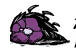) em receitas de panela ou transformar em ovos(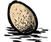) através de um pássaro domesticado.
). Se caçar com cautela,também é possível caçar os lobos e utilizar a sua carne(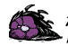) em receitas de panela ou transformar em ovos(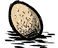) através de um pássaro domesticado.
A vila do Porco-rei () (para personagens não monstros) oferece proteção contra lobos (caso os porcos estejam disponíveis) e uma fonte infinita de ouro() ao seu lado . Entretanto os porcos só estão disponíveis durante o dia e não é necessário morar perto do , uma única viagem ao com varias oferendas já é o suficiente por um bom tempo.
A savanna possui a proteção dos beefalos ( ) que também podem ser usados como fonte de comida e combustível (é possível tosar-los durante a noite e utilizar o seu pelo como combustivel), também há coelhos(
) que também podem ser usados como fonte de comida e combustível (é possível tosar-los durante a noite e utilizar o seu pelo como combustivel), também há coelhos( ) que não são a melhor fonte de comida mas certamente são uma opção e aranhas que são fáceis de matar e dão utilizado em receitas de panela, item muito utilizado em receitas de sobrevivência e vestimentas e utilizado para se curar ou para uma receita de cura melhorada (). Importante destacar que não é necessário fazer a base muito próximo aos beefalos() pois durante a época de acasalamento se tornam agressivos.Caso o jogador estive usando um chapéu de beefalo (
) que não são a melhor fonte de comida mas certamente são uma opção e aranhas que são fáceis de matar e dão utilizado em receitas de panela, item muito utilizado em receitas de sobrevivência e vestimentas e utilizado para se curar ou para uma receita de cura melhorada (). Importante destacar que não é necessário fazer a base muito próximo aos beefalos() pois durante a época de acasalamento se tornam agressivos.Caso o jogador estive usando um chapéu de beefalo ( ) eles se tornam neutros novamente.
) eles se tornam neutros novamente.
Também há o deserto do Oasis. Diferentemente do deserto comum, ele não possui ervas daninhas(). Mas o foco principal de morar no Oasis é a proteção contra queimadas naturais ( ) que ocorrem durante o verão. Para jogadores que desejam fazer bases grandes, certamente é uma ótima vantagem. Contudo geralmente um iniciante não precisa dessa proteção pois suas bases costumam ser pequenas. No Oasis também há grande quantidade de cactos() e a presença de bodes(
) que ocorrem durante o verão. Para jogadores que desejam fazer bases grandes, certamente é uma ótima vantagem. Contudo geralmente um iniciante não precisa dessa proteção pois suas bases costumam ser pequenas. No Oasis também há grande quantidade de cactos() e a presença de bodes( ), que podem ser utilizados como fonte de comida (
), que podem ser utilizados como fonte de comida ( ) porém possuem uma quantidade de HP um pouco grande (700) e uma velocidade de ataque que deve ser respeitada.
) porém possuem uma quantidade de HP um pouco grande (700) e uma velocidade de ataque que deve ser respeitada.
Tecnicamente a sua base pode ser localizada aonde quiser, mas os locais mencionados acima possuem vantagens que pode ajudar o jogador a sobreviver, seja através de proteção ou o fácil acesso a comida.